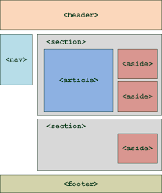
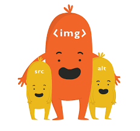

1. Introduction HTML et CSS
HTML (Hyper Text Markup Language) a le rôle de donner du sens et de structurer les contenus d'une page web.
CSS (Cascading Style Sheets) est utilisé pour mettre en forme la page web. Il permet de définir l’apparence des textes (comme la police, la couleur,la taille, etc...), ainsi que l’agencement de la page (comme les marges, l’arrière-plan,etc...)
On n'a pas besoin d'un logiciel spécial pour créer une page web. Il suffit d'avoir un éditeur de texte, par exemple Notepad++, Sublime Text, Atom, ect. pour créer un ficher sous format .html ou .css.
3. Structure HTML
La structure d'une page HTML5 se présente dans la figure ci-dessous:

source
- <!DOCTYPE html> : en tête du code html. Il s'agit de dire qu'on est en train d'utiliser la version html5
- <html> </html> : C'est la balise principale du code. Elle englobe tout le contenu de votre page
- <head> </head> : Cette section contient l'en-tête
- <meta charset="utf-8"/>: l'encodage pour la gestion des caractères spéciaux en latin
- <body> </body> : C'est la partie principale,tous les contenus de la page web doivent être écris entre ces balises.
La structure d'une page web en HTML se présente dans la figure ci-dessous:

source
- <header> </header> : en tête de page. Il peut contenir un logo, une image ou peut aider à la navigation
- <nav> </nav> : contient des liens permettant d'accéder à une section ou un article précis d'une page
- <section> </section> : regroupe les paragraphes d'un même thème
- <article> </article>: contenu indépendant de la page
- <aside> </aside> : pour les informations complémentaires
- <footer> </footer> : pied de page.
4. Présentation des balises
Les pages HTML sont remplies de ce qu'on appelle des balises. Une balise est présentée entre chevrons <balise>
Il y a deux types de balise ci-dessous:
- balise ouvrante <balise> & balise fermante corespondante </balise>
- balise orpheline: exemple <br/>
Voici quelques balises de base:
4.1 Balises de premier niveau
Les balise de premier niveau sont <html> </html>,<head> </head>, <body> </body>
> 4.2 Autres balises:
| Balise |
Description |
| <meta/> |
Métadonnées de la page web |
| <title> |
Titre de la page |
| <em> |
Mise en valeur normale |
| <h1> |
Titre de niveau 1 |
| <h2> |
Titre de niveau 2 |
| <h3> |
Titre de niveau 3 |
| <h4> |
Titre de niveau 4 |
| <h5> |
Titre de niveau 5 |
| <h6> |
Titre de niveau 6 |
| <mark> |
Mise en valeur visuel |
| <p> |
Paragraphe |
| <strong> |
Mise en valeur fort |
| <br/> |
Retour à la ligne |
4.3 Balises de liste:
On peut utiliser les balises de liste pour mieux structurer nos textes. Il exist trois types de balise de liste présentés dans le tableau suivant:
| Balise |
Description |
| <ul> |
Liste non ordonnée |
| <ol> |
Liste ordonnée |
| <li> |
Eléments de la liste ul et ol |
| <dl> |
Liste de définition |
| <dt> |
Terme à définir |
| <dd> |
Définition du terme |
Pour en savoir plus, cliquez ici
5. Quelques techniques utiles
5.2 Insérer une image
On insère une image avec la balise orpheline <img/>. A noter que'il y a deux attributs obligatoires: src(nom de l'image) et alt(une description de l'image).
Exemple, pour mettre une photo nommée "images.png" qui illustre la balise et les attributs demandés comme cette photo

On utilise <img scr="images.png" alt="balise et attributs"/>
Il est nécessaire de savoire qu'il existe plusieurs formats d'images adaptées au Web: .jpg ou .jpeg pour les photos, .png pour toures les autres illustrations, et .gif pour les dessins animés.
5.3 Insérer un lien
Pour insérer un lien, on utilise la balise <a/> avec l'attribut href pour indiquer l'adresse de la page cible.
Exemple: <a href="https://adresse_du_site">nom du site</a>.
Pour créer un lien dans un nouvel onglet, on ajoute l'attribut target="_blank" avant de fermer la balise ouvrante comme ci-dessous:
<a href="adresse_du_site" target="_blank"> nom du site</a>
On peut aussi créer le lien qui permet d'amener vers d'autres endroits sur la même page.Pour celà, on utilise l'attribut id pour « marquer » un endroit dans la page,
puis faire un lien vers le lien souhaité comme ceci : <a href="#lien_souhaité">.
5.4 Créer un tableau
Un tableau s'insère avec la balise <table> et se définit avec <tr>. Il faut noter que les balises <tr> <tr> doivent se répeter pour chaque ligne.
L'ensemble de lignes dans le tableau contient dans les cellules normales <td> ou cellules d'en-tête <th>
Un tableau peut être divisé en trois sections <thead>(en-tête),<tbody>(corps) et <tfoot>(bas du tableau) mais ce n'est pas obligatoire de les utiliser.
La légende du tableau se définit comme ceci: <caption>la_légend_du_tableau</caption>
Voici un exemple de code html écrit un tableau en trois parties
On peut également fusionner des cellules "colonne" grâce à l'attribut colspan ou les cellules "ligne" avec rowspan. Il s'agit d'indiquer le nombre de cellules à fusionner.
Exemple: <td rowspan="2"> C'est à dire que cette celulle occupe la place de 2 cellules.
5.5 Créer des formulaires
Les formulaires sont principalement utilisés pour recueillir des données à propose de vos utilisateurs.
On délimite un formulaire en utilisant la balise <form> avec les deux attributs :
- method: mode d'envoi des données
- action: page vers laquelle le utilisateur sera redirigé après envoi du formulaire et qui traitera les informations.
Les éléments du formulaire qui peutvent s'insérer avec la balise <input /> sont type, name, id.
La valeur de son attribut type permet d'indiquer quel type de champ doit être inséré :
- text : zone de texte
- mail: adresse email
- checkbox : selection mutilple
- radio : mono-selection
- etc.
Les balises <label> </label> permet d'écrire un libellé. On l'associe à un champ de formulaire avec l'attribut for, qui doit avoir la même valeur que l'id.
Les balises <select> </select> permetent d'écrire la liste déroulante.
A l'intérieur du <select> </select>, on place plusieurs balises <option> </option>.
On ajoute à chacune d'elles un attribut value afin d' identifier ce que l'utilisateur sera choisi.
Pour regrouper les options, on utilise la balise <optgroup> </optgroup>.
L'attribut maxlength = "entier" nous permet de limiter la longeur.
7. Techniques de mise en page en CSS
7.1 Positionnement
Pour effectuer cette technique, on utilise la propriété "position" avec les trois posibilités de valeur comme relatif, absolu, et fixe.
- Le positionnement relatif aide à décaler l'élément par rapport à sa position normale.
- Le positionnement absolu permet de placer un élément (réellement) n'importe où sur la page
Pour effectuer un positionnement absolu, on doit utiliser quatre propriétés CSS: left, right, top, bottom pour préciser l'endroit où on veut positionner le bloc.
- Le positionnement fixe identique au positionnement absolu mais, cette fois, l'élément reste toujours visible, même si on descend plus bas dans la page.
7.2 Flexbox
Flexbox est une des techniques pour positionner les blocs sur la page ou une section. C'est la plus récente et la plus puissante pour la mise en page.
Le principe de Flexbox est d'avoir un conteneur, avec plusieurs éléments à l'intérieur.
7.3 Effets
Transition
Les transitions nous permettent de modifier de façon progressive tout un tas de propriétés d'un objet.
Animation